Jeeves Server includes a webhook gateway that receives HTTP POST requests, validates them against JSON Schema rules, and dispatches matched events to shell commands via a durable queue.

Events are defined in your config file:
{
"events": {
"notion-page-update": {
"schema": {
"type": "object",
"properties": {
"type": { "const": "page.content_updated" }
},
"required": ["type"]
},
"cmd": "node /path/to/handler.js",
"map": {
"pageId": {
"$": { "method": "$.lib._.get", "params": ["$.input", "data.page_id"] }
},
"type": {
"$": { "method": "$.lib._.get", "params": ["$.input", "type"] }
}
},
"timeoutMs": 60000
}
}
}
Each event has a JSON Schema that's validated against the incoming request body using ajv. The first matching event wins — order matters if schemas could overlap.
Common patterns:
// Match a specific event type
{ "type": "object", "properties": { "type": { "const": "page.content_updated" } }, "required": ["type"] }
// Match any object with an "action" field
{ "type": "object", "required": ["action"] }
// Match based on nested field
{ "type": "object", "properties": { "data": { "type": "object", "properties": { "status": { "const": "completed" } } } } }
When an event config includes a map object, the incoming body is transformed via @karmaniverous/jsonmap before being passed to the command. This extracts only the fields you need from potentially large webhook payloads.
The lib object available in mappings includes radash as _.
When map is omitted, the full webhook body is passed as-is.
Example — Notion sends a large payload, we extract just two fields:
{
"pageId": {
"$": { "method": "$.lib._.get", "params": ["$.input", "data.page_id"] }
},
"type": {
"$": { "method": "$.lib._.get", "params": ["$.input", "type"] }
}
}
Input: { type: "page.content_updated", data: { page_id: "abc123", ... } }
Output to command: { pageId: "abc123", type: "page.content_updated" }
Webhook callers must authenticate with a key that has scope access to /event:
{
"keys": {
"webhook-notion": {
"key": "random-seed-string",
"scopes": ["/event"]
}
}
}
Your config contains a seed — a secret string that never leaves the server. The actual URL key is derived from the seed by the server. To get it:
curl -s "https://your-domain.com/insider-key" -H "X-API-Key: <your-seed>"
# Returns: { "key": "a1b2c3d4..." }
Use the returned key in webhook URLs:
curl -X POST "https://your-domain.com/event?key=<derived-key>" \
-H "Content-Type: application/json" \
-d '{"type": "page.content_updated", "data": {"page_id": "abc123"}}'
Insiders with /event scope can also copy an authenticated event URL directly from the Event link button in the header bar — no command line needed.
See the Insiders, Outsiders & Sharing guide for full details on the key model.
Events are processed through a durable JSONL queue:
logs/event-queue.jsonl with metadatacmd is spawned with the (optionally mapped) body piped as JSON to stdintimeoutMs (per-event or the global eventTimeoutMs default)logs/event-queue.cursor) tracks the byte offset of the last processed entry, surviving restarts{"ts":"2026-02-15T05:00:00Z","event":"notion-page-update","cmd":"node handler.js","body":{"pageId":"abc123"},"timeoutMs":60000}
The queue survives server restarts. On startup, the processor reads the cursor file and resumes from where it left off. If the cursor file is missing, processing starts from the beginning of the queue.
All events — matched and unmatched — are logged to logs/event-log.jsonl:
{"ts":"2026-02-15T05:00:00Z","event":"notion-page-update","matched":true,"exitCode":0,"durationMs":1234}
{"ts":"2026-02-15T05:00:01Z","event":null,"matched":false,"bodyPreview":"..."}
Each log write also purges entries older than eventLogPurgeMs (default: 30 days). This keeps the log file from growing unbounded.
Your command receives the (optionally mapped) body as JSON on stdin:
// handler.js
const chunks = [];
process.stdin.on('data', (chunk) => chunks.push(chunk));
process.stdin.on('end', () => {
const body = JSON.parse(Buffer.concat(chunks).toString());
console.log('Received:', body.pageId);
// Do your work here
});
Key points:
timeoutMs or it's killed{
"eventTimeoutMs": 30000,
"eventLogPurgeMs": 2592000000
}
Check the event log for failures:
# Recent failures
grep '"exitCode":' logs/event-log.jsonl | grep -v '"exitCode":0'
# Unmatched events (potential misconfiguration)
grep '"matched":false' logs/event-log.jsonl
your config file (see Configuration above)https://your-domain.com/event?key=<webhook-derived-key>logs/event-log.jsonlNote: Notion signs webhooks with HMAC. For production use, add signature verification in your handler before processing.